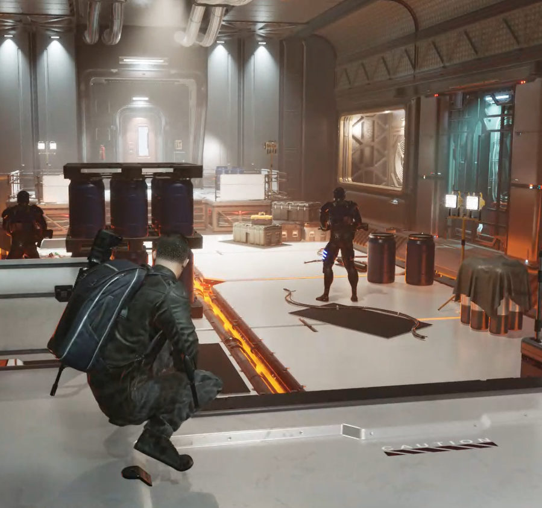

Ascent is a single-player third-person shooter built in C++ on Unreal Engine 5. The player's goal is to reach the top of the city's tallest building to reset the malfunctioning core system and regain control of the city's systems. Each floor presents a new challenge to the player. They will use a grappling hook to traverse the environment and pull objects for cover or to pick up items while encountering Cyborg Soldier Squads that coordinate with each other and the building's systems to stop the player.
The purpose of this project is to strengthen my C++ skills and object-oriented programming fundamentals to build gameplay systems. Ascent's systems make use of polymorphism through inhertiance hierarchies and interfaces, and data-driven design via Unreal's Data Assets to ensure extensiblity as the project grows while staying practical given asset constraints of working as a solo developer.
The Cyborg Soldier uses a Behavior Tree with custom BTTaskNode tasks and BTDecorator
decorators for each state implemented in C++. The soldier patrols via EQS random wandering,
transitions to chase when the player enters its sight cone, and enters a nested
Parallel combat state where aiming, strafing, and firing.
Additionally, when one soldier loses sight of the player, it broadcasts the last known location to all active soldiers in the level via a sphere overlap query, pushing them into an Investigate state.
Implementation Note: The perception system uses UAISenseConfig_Sight
with dynamic radius expansion on combat engagement, and UAISenseConfig_Damage
so soldiers react to being shot from outside their sight cone.
Additionally, the strafe task uses NodeMemory for per-enemy state since all
soldiers share one task instance.
The grappling hook reads the environment and responds differently based on what it hits. Heavy objects like walls and structures pull the player toward them in a straight line with gravity disabled during travel. Lighter objects like crates get pulled toward the player instead, giving them a way to grab cover mid-fight.
Implementation Note: The hook component never checks what type of actor it hit. Instead it calls a single
interface function via Execute_GrapplePull() and each class decides what
being grappled means for them. Adding a new grappable type only requires implementing
IGrappable with no changes to the hook component itself.
Each weapon is defined entirely by a UWeaponDataAsset instance. Recoil values,
spread angle, projectiles per shot, reload timing, mesh, sound effects, and animation
montages all live on the Data Asset. The current system supports hitscan weapons which are weapons
that resolve hits instantly via line trace, covering rifles, shotguns, and similar archetypes.
Adding a new hitscan weapon type requires only a new Data Asset instance with no C++ changes.
Implementation Note: Each weapon component broadcasts fire and reload events carrying the weapon type as a parameter. A coordinating inventory component re-broadcasts these through its own stable delegates so the character binds once and receives the correct event regardless of which weapon is currently active or how many times weapons have been swapped at runtime.
The development of this project follows a feature-branch workflow with pull request merged into the dev branch. Each pull request includes: Summary, Changes, Implementation Notes, Testing, and Known Limitations/Issues.
View GitHub Repository